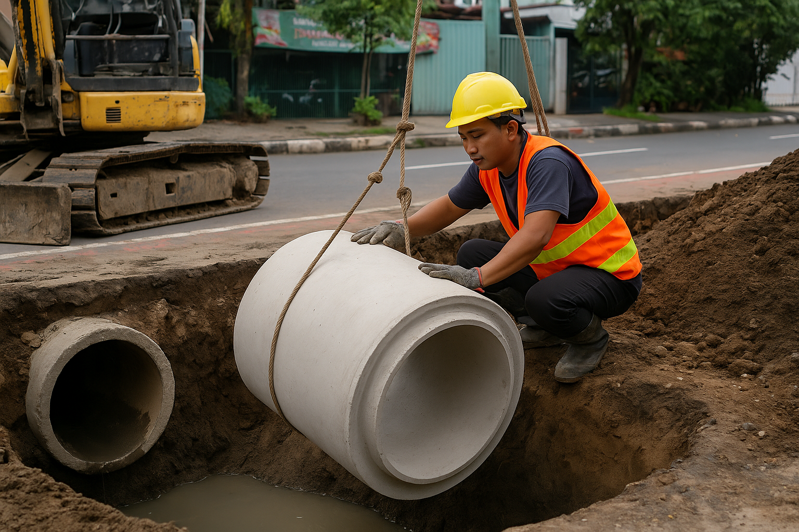

By Admin August 14, 2024
Tips Merawat Septic Tank Agar Tidak Cepat Penuh & WC Tetap Lancar
Perawatan septic tank sangat penting untuk mencegah WC mampet, bau tidak sedap, serta penumpukan lumpur yang dapat menyebabkan kerusakan saluran. Lakukan penyedotan rutin setiap 2–3 tahun, hindari membuang tisu, pembalut, dan sampah lainnya ke WC, serta gunakan bakteri pengurai agar sistem sanitasi bekerja lebih optimal.
Read More
RECENT POST
-
 Tips Mencegah WC Mampet di Rumah
Oktober 10, 2024
Tips Mencegah WC Mampet di Rumah
Oktober 10, 2024
-  Kapan Waktu Terbaik Untuk Sedot WC? Oktober 12, 2024
-
 Bahaya Menunda Sedot Septic Tank
Oktober 15, 2024
Bahaya Menunda Sedot Septic Tank
Oktober 15, 2024